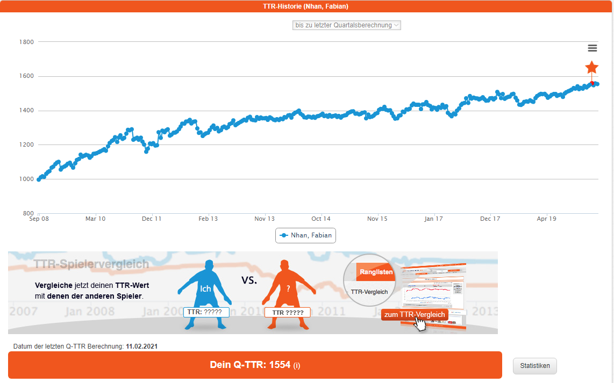

Mit diesem Blog würde ich gerne mein Projekt Road to 1800 TTR ankündigen. Mein Plan ist es die Matches meiner Mannschaft, meine Matches, Training, Emotionen, Gedanken festzuhalten und
euch mit dieser Aktion euch auch zu motivieren eure Träume/Wünsche in die Tat umzusetzen. Kurz zu meiner Tischtennis Historie. Ich startete meine Tischtennislaufbahn im Gymnasium mit 13 Jahren
unter der Aufsicht von Friedhelm Dornhofer (liebe Grüße, falls du diese Seite jemals entdecken solltest). Ich habe einige Trophäen in meiner Kindheit gesammelt, aber nur im Bereich meines
Kreises. Sodass ich es nie wirklich weit in der Tischtennisliga geschafft habe, sodass ich meistens in dem 1500 TTR Bereich herumdümpelte. Damals war mir das genug, aber durch den Abgang
unseres Topspielers vom TS Jahn sah ich mich nun in der Position in der Bezirksliga im vorderen Paarkreuz zu spielen, welches im Vergleich zu 1. Kreisliga Mitte eine riesige Veränderung war.
Deswegen sah ich ein, dass Veränderung vonnöten ist, um meine gemeinschaftlichen und sportlichen Ziele zu erreichen.
